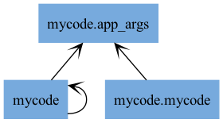
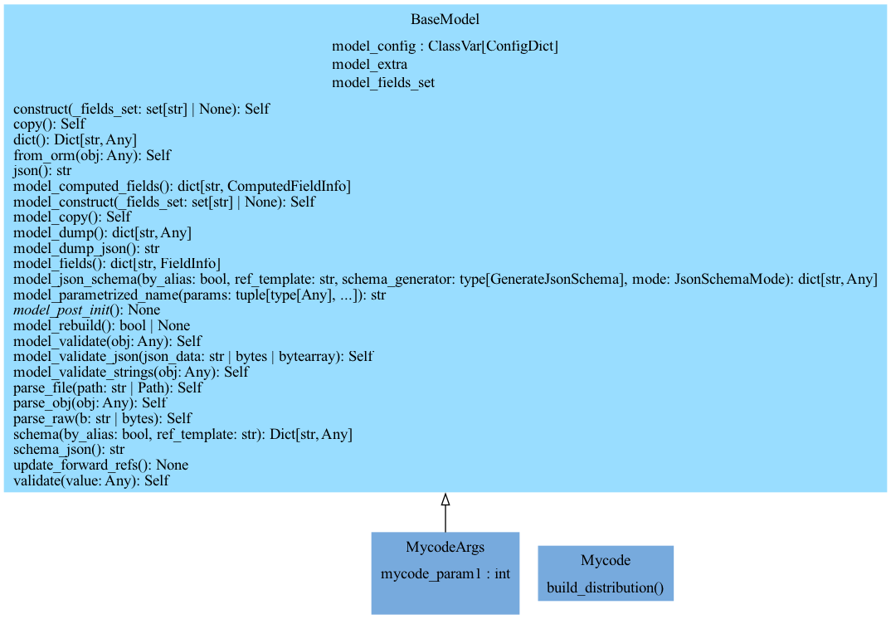
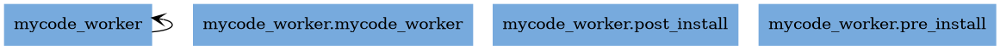

Example1: Mycode-Project
manager:
 {kind=link}
{kind=link}
worker: mycode_worker
{kind=link}
Module mycode_worker extension of your_code
Auteur: yourself
- class mycode_worker.mycode_worker.MycodeWorker[source]
Bases:
DagWorkerclass derived from DagWorker
- algo_A()[source]
Perform algorithm A.
This method belongs to MyCodeWorker class.
- Parameters:
self – Instance of MyCodeWorker.
- Returns:
None
- Prints:
str: Print statement indicating the execution of algorithm A.
- algo_B()[source]
Prints a message indicating the execution of algo_B method in MyCodeWorker class.
- Parameters:
self – Reference to the instance of MyCodeWorker class.
- Returns:
None
- algo_C()[source]
Prints a message indicating that the algo_C method of MyCodeWorker has been called.
- Parameters:
() (self) – The MyCodeWorker instance on which the method is called.
- Returns:
None
- algo_X()[source]
Perform a specific algorithm X.
This method prints a message indicating the execution of algorithm X.
- Parameters:
self – The object instance.
- Returns:
None
- algo_Y()[source]
Perform algorithm Y.
This method is a part of the MyCodeWorker class.
- Parameters:
self – The instance of the MyCodeWorker class.
- Returns:
None
- algo_Z()[source]
Perform a specific algorithm Z.
This function is part of the MyCodeWorker class.
- Returns:
None
- static build(target_worker, dask_home, worker, mode=0, verbose=0)
Function to build target code on a target Worker.
- Parameters:
target_worker (str) – module to build
dask_home (str) – path to dask home
worker – current worker
mode – (Default value = 0)
verbose – (Default value = 0)
- cython_decorators = ['njit']
- dask_home = None
- static do_works(workers_tree, workers_tree_info)
test of workers
- Parameters:
workers_tree – distribution tree
workers_tree_info
- Returns:
str, the log output from this worker
- Return type:
logs
- env = None
- static exec(cmd, path, worker)
execute a command within a subprocess
- Parameters:
cmd – the str of the command
path – the path where to lunch the command
worker
Returns:
- exec_mono_process(workers_tree, workers_tree_info)
Execute tasks in a single process, respecting dependencies, but only for branches assigned to this worker via round-robin.
- exec_multi_process(workers_tree, workers_tree_info)
Execute tasks in multiple threads, distributing branches to workers in round‑robin, then honoring dependencies per worker.
- static expand(path, base_directory=None)
Expand a given path to an absolute path. :param path: The path to expand. :type path: str :param base_directory: The base directory to use for expanding the path. Defaults to None. :type base_directory: str, optional
- Returns:
The expanded absolute path.
- Return type:
str
- Raises:
None –
Note
This method handles both Unix and Windows paths and expands ‘~’ notation to the user’s home directory.
- static expand_and_join(path1, path2)
Join two paths after expanding the first path.
- Parameters:
path1 (str) – The first path to expand and join.
path2 (str) – The second path to join with the expanded first path.
- Returns:
The joined path.
- Return type:
str
- get_logs_and_result(*args, verbosity=50, **kwargs)
- get_work(work)[source]
- Parameters:
work (
str) – contain the worker function name called by BaseWorker.do_work
this is type string and not type function to avoid manager (e.g. Mycode) to be dependant of MyCodeWorker :return:
- static get_worker_info(worker_id)
def get_worker_info():
- Parameters:
worker_id
Returns:
- home_dir = None
- is_managed_pc = False
- static join(path1, path2)
Join two file paths.
- Parameters:
path1 (str) – The first file path.
path2 (str) – The second file path.
- Returns:
The combined file path.
- Return type:
str
- Raises:
None –
- logs = None
- mode = None
- static new(app, mode=None, env=None, verbose=0, worker_id=0, worker='localhost', args=None)
new worker instance :param module: instanciate and load target mycode_worker module :param target_worker: :param target_worker_class: :param target_package: :param mode: (Default value = mode) :param verbose: (Default value = 0) :param worker_id: (Default value = 0) :param worker: (Default value = ‘localhost’) :param args: (Default value = None)
Returns:
- static onerror(func, path, exc_info)
Error handler for shutil.rmtree. If it’s a permission error, make it writable and retry. Otherwise re-raise.
- start()[source]
Start the function.
This function prints the file name if the ‘verbose’ attribute is greater than 0.
- Parameters:
self – The current instance of the class.
- Returns:
None
- stop()[source]
Stop the current action.
- Raises:
NotImplementedError – This method needs to be implemented in a subclass.
- t0 = None
- static test(workers={'127.0.0.1': 1}, mode=0, env=None, verbose=None, args=None)
- Parameters:
app
workers
mode
verbose
args
- Returns:
- topological_sort(dependency_graph)
Perform a topological sort on the dependency graph. Raises ValueError on cycles.
- verbose = 1
- worker = None
- worker_id = None
- works(workers_tree, workers_tree_info)
Run the worker tasks.
{kind=link}